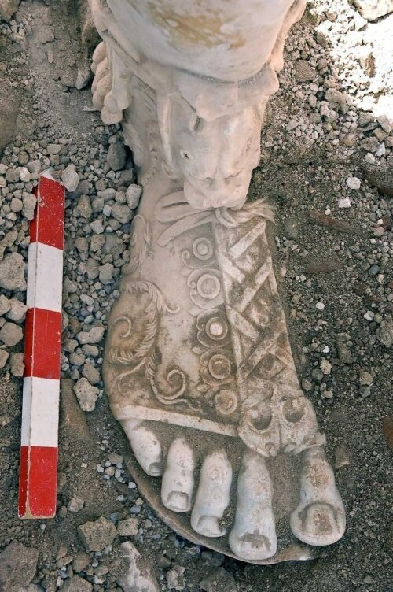
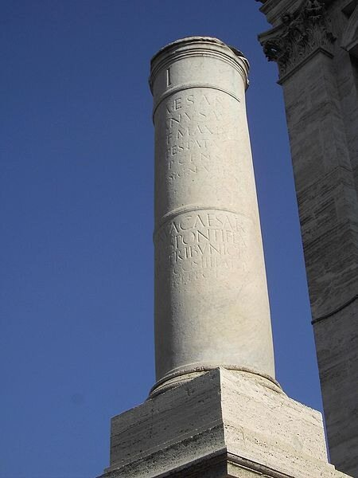
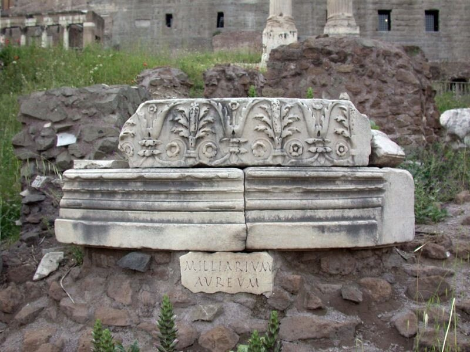
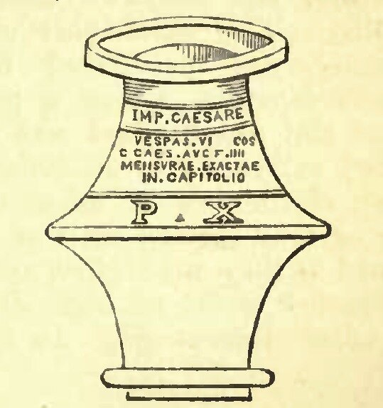

Но вы пропали, я один.
Опять тоска, опять досада;
Хотя бы Фавн пришел с долин;
Хотя б прекрасная Дриада
Мне показалась в мраке сада.
О, как чудесно вы свой мир
Мечтою, греки, населили!
Как вы его обворожили!
А наш — и беден он, и сир,
И расквадрачен весь на мили.
Н.В. Гоголь, «Ганц Кюхельгартен», Идиллия в картинах.
Мы обещали завершить рассказ о футе, начатый нами ранее и продолженный чуть позже. Наш разговор сегодня будет о римском футе. Мы как раз остановились на нем, когда в последнем посте рассматривали классификацию мер длины у Герона Александрийского.

Стопа (foot) статуи Марка Аврелия
Как правильно подсчитал известный английский ученый с не менее известным английским именем Смит (William Smith), имеется пять способов определить длину римского фута:
1. Измеряя дошедшие до нас эталоны фута, включая изображенные на надгробиях и представленные мерными линейками, найденными в ходе археологических раскопок.
2. Измеряя известные из дошедших до нас текстов и карт с легендами (итинерарий) расстояния вдоль дорог, особенно между сохранившимися мильными камнями («верстовыми столбами»).
3. Измеряя сохранившиеся здания и памятники.
4. Измеряя объем содержимого в сохранившихся мерных емкостях.
5. Ну и конечно же, измеряя длину градуса на земной поверхности, куда без этого, не обижать же французов..
Рассмотрим эти возможности в указанном нами порядке.
1. Надежда получить точное значение римского фута, измеряя сохранившиеся эталоны, будет таять с каждым новым измерением. Увы, в отличие от английских пэров, которые почитаются равными, двух равных между собой эталонов мы не встретим. Об этом сокрушался еще Цельсий, изучавший в 1734 г. меры Древнего Рима. Вырезанные на камне монументов эталоны очень грубо разделены на составляющие единицы, которые нередко даже различной длины, да и сами эталоны достаточно примитивны. В этом отношении сохранившиеся латунные или железные измерительные линейки конечно же более точны. Но не будем сбрасывать со счетов и эталоны каменные. Ведь именно с точностью, с которой вычерчены эти эталоны, велись строительные работы в Древнем Риме. Удалось обнаружить четыре таких эталона. Первый нашли в XVI веке в саду Ватикана на надгробии некого Статилия, и назвали его Statilian foot. Он был очень грубо нанесен и имел неточные разбиения на меньшие меры. Вторым стал найденный приблизительно в это же время эталон на надгробии Коссутия, предположительно знаменитого архитектора, которого упоминает Витрувий; он назван Cossutian foot. Насечки более мелких единиц на нем сделаны значительно точнее, чем на предыдущем. Третий эталон Aebutian foot был обнаружен на памятнике Эбутия в Villa Mettæi. Он был грубо разделен на пальмы и приближался по размеру к современному футу. Последний, четвертый эталон фута – Capponian foot – был обнаружен на мраморном постаменте без надписи в Via Aurelis. Все четыре эталона хранятся сейчас в Капитолийских музеях. Средняя длина всех четырех эталонов составила в современных английских дюймах (которых, как известно, в английском футе 12) величину 11,623326 дюйма.
Не прибавляет оптимизма также измерение эталонов в виде измерительных линеек. Считается, что была образцовая линейка длиною в один фут, которая хранилась в Капитолии, но она вероятно была утрачена при пожаре Капитолия в эпоху то ли Вителлия, то ли Тита.
Средняя величина измерений всех дошедших до нас эталонов римского фута составляет 29,62 см.
2. Измерения расстояний также не могли дать точного значения римского фута, так как повороты на дорогах лишали эти измерения однозначности. Кроме того, неизвестно, мерились ли эти расстояния между центральными площадями городов, или между городскими воротами. Что касается дорожных указателей – мильных камней – то они не ставились на римских дорогах через каждую милю (1 миля = 5000 футов), а размещались на характерных участках дороги, а надписи на них указывали расстояние до ближайшего населенного пункта или заметного перекрестка дорог. Ниже приведено изображение такого камня.

В 20 году до н. э. Октавиан Август, бывший в то время уполномоченным по делам римских дорог, установил на Римском форуме так называемый Milliarium Aureum (Золотой мильный камень), на котором были написаны названия столиц провинций Римской империи и расстояния до них от Рима. От камня, как считалось, шли все основные дороги империи («все дороги ведут в Рим»). До нас дошло только основание камня.

Наиболее известные вычисления величины фута на основе измерения расстояний между мильными камнями на Аппиевой дороге были произведены в конце XVII века итальянским ученым Франческо Бьянчини.
Согласно всем дорожным измерениям фут в среднем равнялся 11,60015 англ. дюймов, или 29,590 см.
3. Одним из самых известных примеров определения величины единицы длины считается измерение поперечного размера старого храма, стоявшего на Акрополе до Парфенона. Этот храм, воздвигнутый в VI в. до н.э. Писистратом и его сыновьями, назывался Гекатомпедон, так как его поперечный размер равнялся 100 греческим футам. Однако позже было доказано, что фундамент, приписывавшийся долгое время Гекатомпедону, не имеет необходимой длины для построения на нём стофутовой целлы, внутренней части храма, о которой, в частности, идет речь у Плутарха. Однако само существование храма не отрицается. В случае с Римом, мы имеем в качестве возможны памятников для измерения обелиск на Piazza del Popolo в Риме и обелиск Фламиния, размеры которых в высоту даны Плинием. Однако имелись сомнения в том, что до нас эти цифры дошли в том виде, как их написал Плиний (читали высоту первого из обелисков и как 85 ¾ футов, и как 82 ¾ фута; согласитесь разница существенная). Кроме того, первый из обелисков был перенесен во времена папы Сикста V, и нет уверенности, что высота его не изменилась во время этого переноса.
Как бы то ни было, все возможные измерения зданий и памятников дали в среднем 0,96994 английского фута, или 29,5638 см.
4. Известно, что римляне для измерения объема жидкости использовали специальную емкость - конгиус, которая дала название и единице объема, равняющейся шести секстариям (один секстарий приблизительно равен пинте). Восемь конгиусов составляли одну амфору. А амфора была равна кубическому футу (quadrantal, или как писали некоторые античные авторы, amphora cubus. ). (Хуан Батиста Вильяльпандо (Villalpando), итальянский ученый испанского происхождения, работавший на стыке XVI-XVII веков, тщательно изучил так называемый конгиус Веспасиана (см рис), и вычислив длину стороны куба, объем которого был в восемь раз больше объема конгиуса, назвал эту величину истинным стандартом римского фута.

Но у последующих поколений ученых появились сомнения в том, что древние римляне могли изготавливать свои мерные емкости с той точность, с которой их изучал Вильяльпандо, предусматривающей, как минимум, возможность извлечения кубических корней, и назвали совпадение чисел величины фута у него с другими измерениями простым совпадением. Но все же в историю вошло значение фута, вычисленного по этому методу – 29,968 см.
5. И, наконец, измерения, связанные с величиной длины большого круга земного шара, или как говорят, длины земного меридиана. Мы уже мельком касались этого вопроса, когда рассматривали труды Ньютона, относящиеся к священному локтю. Попытки привязать длину определенного отрезка земного меридиана к используемым мерам длины предпринимались и к египетским единицам, и, особенно, к греческим. Но не избежали этой участи и римские стадий и фут. Этим занимались многие исследователи, их работы были обобщены известным географом М.Gosselin. Согласно его теории, древние астрономы были в определенный период знакомы с размерами большого круга Земли; тогда они разделили эту величину на 300, 360 или 400 градусов, получив различные значения стадия и производных единиц длины. Ученый не отрицал, что меры длины имеют антропоморфное происхождение, но полагал, что «они (астрономы – g_g) заменили старые единицы вновь полученными, сохранив их традиционные названия.” Ну а царивший в этой области хаос Госселен объяснил завоеваниями и миграцией целых народов. Однако, Госселен, естественно, не смог объяснить, когда же был тот благословенный период, в течение которого возникли «правильные» единицы измерения. По отношению к римским единицам он глухо намекал на эпоху, современную Полибию. Справедливости ради надо сказать, что ему удалось таким образом объяснить значения единиц в основных системах античности, в том числе и римской. Хотя ни одного исторического факта, подтверждающего его правоту, он привести не смог. Свидетельств этому нет ни у одного из известных писателей той эпохи, и даже Страбон, тщательно описывающий все подобные явления, хранит по этому поводу молчание.
И все же приведем среднее значение римского фута, полученное этим методом: 29,639 см.
Итак, мы разобрались, к чему пришли ученые недавнего времени в отношении длины римского фута. Но исследования в этой области не прекращаются.
Приведем значение римского фута, которое получено в результате использования методов современной математической статистики. Оно равно 296,2 мм ± 0,5 мм, или около (296.2 ± 0.17%) мм и получено Рольфом Роттляндером (Rolf C. A. Rottländer, Germany). Проделана была большая работа, но, к сожалению, как и всякая средняя величина, среднее значение римского фута не применимо ни к одному конкретному объекту. И если мы читаем где-то, что длина фундамента храма составляла столько-то римских футов, то умножив эту величину на приведенное среднее значение и сопоставив полученный результат с измерением на местности, не должны удивляться, что эти два числа не совпадают. Каждый мастер пользовался своим эталоном фута, который, скорее всего, отличался от среднего. Тем не менее польза от этой работы есть. Хотя бы потому, что мы можем составить таблицу значений основных единиц длины, применяемых в Древнем Риме (ШБ, взято из Wikipedia):
Название единицы | Латинское название | Соотношение с футом | Метрический эквивалент |
палец | digitus | 1⁄16 | 18,5 мм |
дюйм | uncia | 1⁄12 | 24,6 мм |
пальм | palmus | 1⁄4 | 74 мм |
фут | pes | 1 | 29,6 см |
локоть | cubitus | 1 1⁄2 | 44,4 см |
шаг | gradus | 2 1⁄2 | 0,74 м |
двойной шаг | passus | 5 | 1,48 м |
перч | pertica | 10 | 2,96 м |
арпан | actus | 120 | 35,5 м |
стадий | stadium | 625 | 185 м |
миля | mille passuum (milliarium) | 5000 | 1,48 км |
лига | leuga | 7500 | 2,2225 км |
И чтобы уже окончательно сделать Римский фут наглядным, заметим, что он с очень небольшой погрешностью равняется длинной стороне печатного листа формата А4 (297мм).